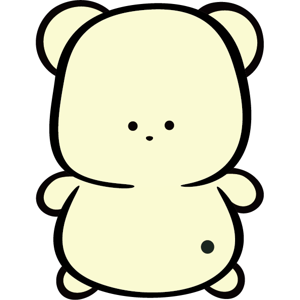

映画の余韻をぶっ壊せ。
THE MOVIE HAS ENDED.
TIME TO THE END
0%0.000s
SCROLL VELOCITY1.0 ×
上へ進む / 下へ戻る · PCは ↑ / ↓
THAT'S A WRAP.
余韻、終了。
00.000sec
NEW PERSONAL BEST
最高速度—
自己ベスト—

余韻クラッシャー
もう終わり？ポップコーン残ってるよ。
記録はこのブラウザに、入力方式ごとに保存されます。
タイム基準の目安ランクです。参加者の実測順位ではありません。